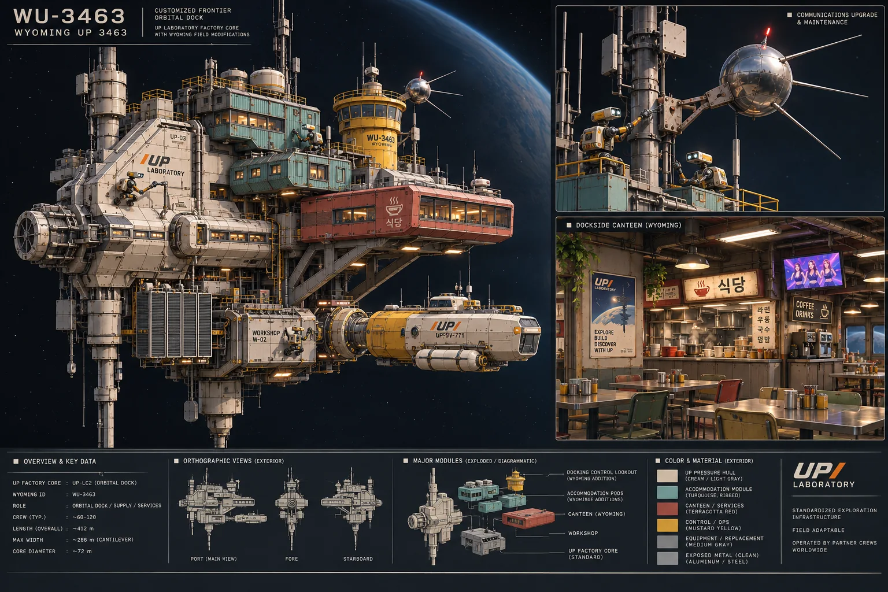
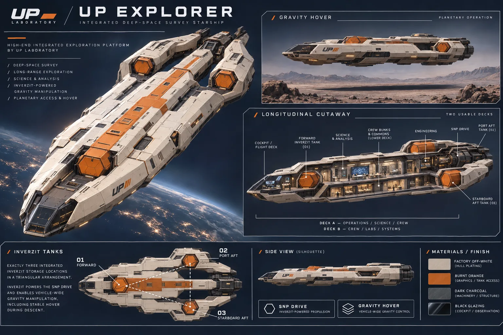
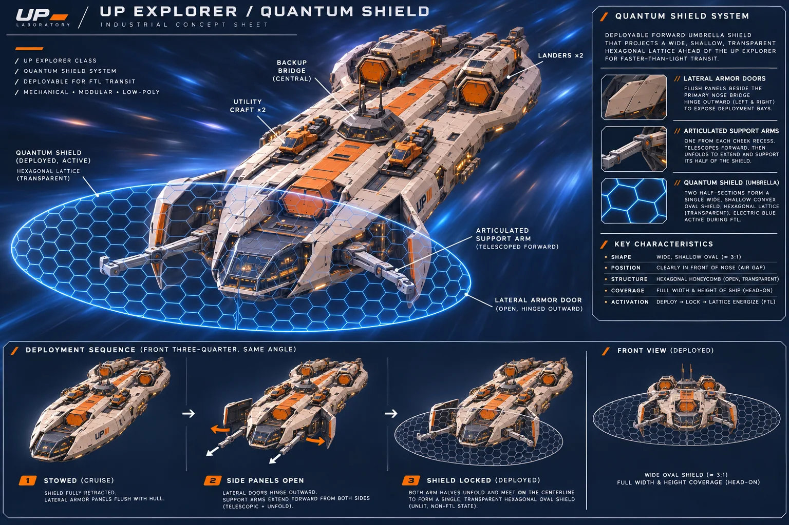
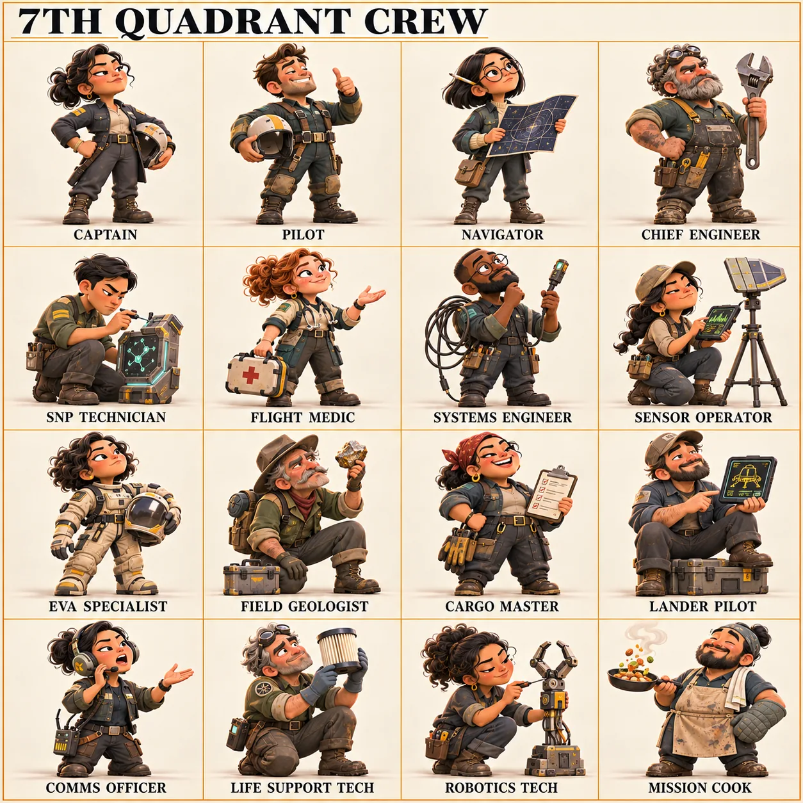
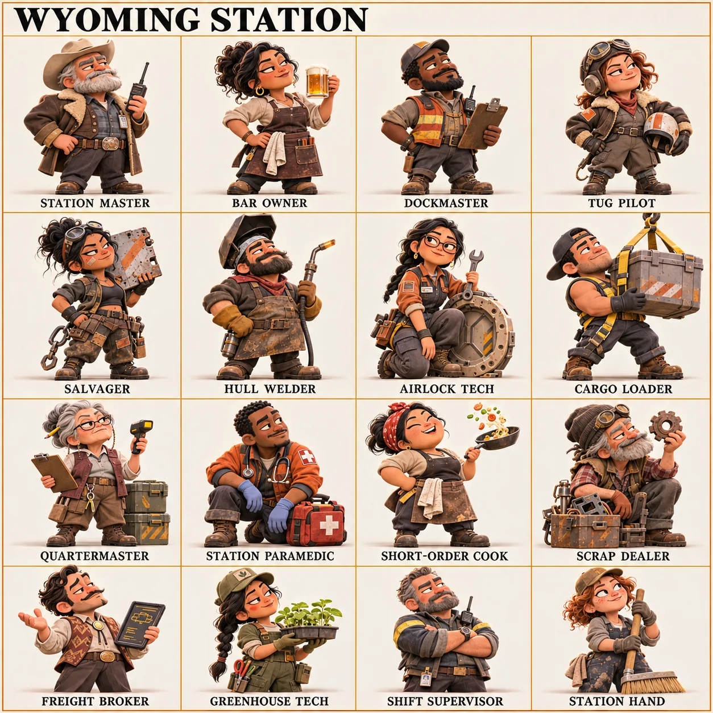
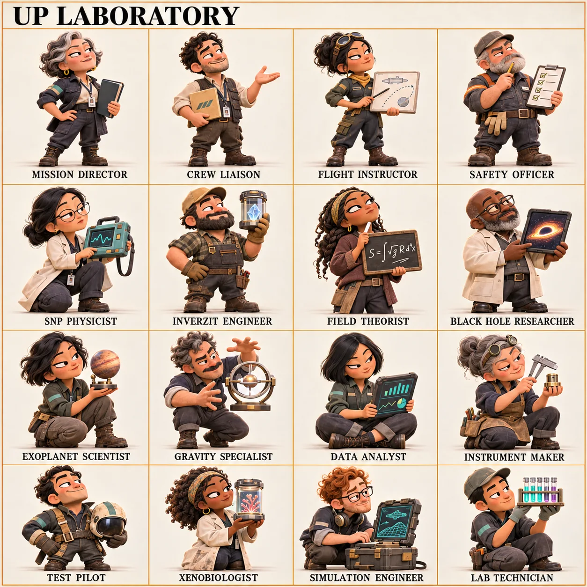
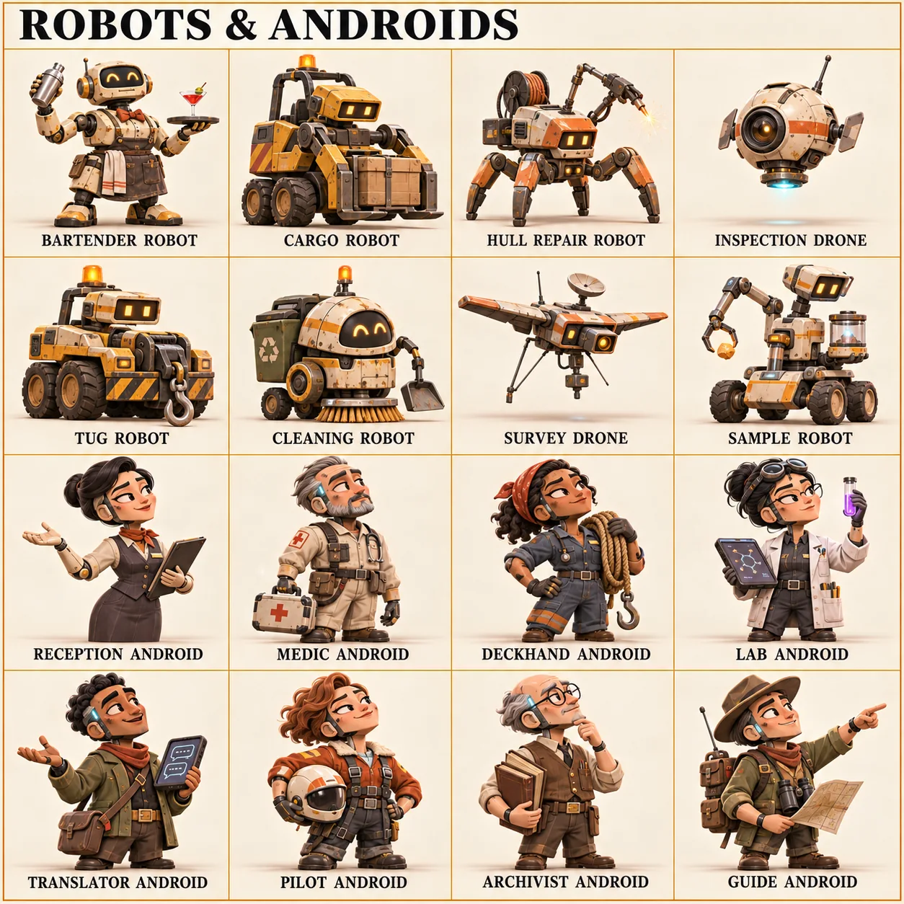

UP Laboratory / Five Percent
Világkalauz
Képes univerzum-biblia a Wyoming bázisról, a 7-es Kvadráns legénységéről, az UP Explorerről és a 64 szereplőről. A leírások AI-promptként másolhatók.
Bázis és űrhajók



A világ 64 szereplője




Keress szerepkör vagy azonosító alapján; minden karakter saját másolható promptot kap.